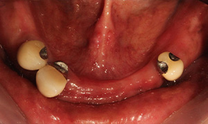

네비게이션 임플란트
네비게이션 임플란트란?
3D CT 촬영을 통해 컴퓨터로 모의 수술 시뮬레이션을 한 뒤,
환자 맞춤형 수술형 가이드를 제작하고, 수술 시 구강에 장착하여
사전에 계획된 대로 수술을 진행함으로써 정확성과 안정성을 높이는 술식입니다.
Navigation Implant
일반적인 임플란트
잇몸 절개 및 봉합 O
출혈과 붓기가 심함
상대적으로 긴 기간 소요하여 회복
평균 7 - 14회 내원
130분의 수술시간
(1, 2차 수술, 본뜨기,임시보철 기준)
(1, 2차 수술, 본뜨기,임시보철 기준)
네비게이션 임플란트
잇몸 절개 및 봉합 X
출혈과 붓기가 최소화
약 1 - 7일 소요하여 회복
평균 3 - 5회 내원
60 - 90분의 수술시간
(무절개수술, 임시보철 기준)
Nowon Yonseirian Dental Clinic
네비게이션 임플란트 수술 과정
Navigation Implant Surgery Course
01
3D - CT로 임플란트 식립 위치 뼈의 상태 분석

02
디지털 네비게이션 시스템을 이용한 시뮬레이션(모의) 수술
03
디지털 분석 시스템으로 제작한 수술 장치 (가이드)
04
가이드를 이용하여 정확하고 신속하게 수술 진행
Nowon Yonseirian Dental Clinic
네비게이션 임플란트 수술 결과
Navigation Implant Surgery Course
Before

After

01
수술전
02
가이드 장착
03
무절개 수술
04
최종 수복물